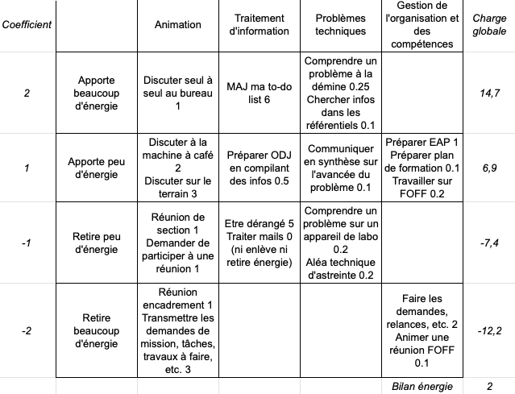
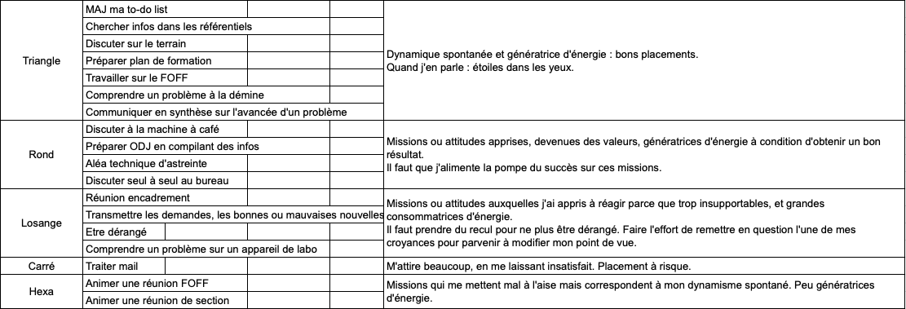

Faire le diagnostic énergétique de ses attitudes et activités : que faites-vous par plaisir, par nécessité, par obligation, par évitement ?
Elaborer une stratégie personnelle pour retrouver sa motivation en modifiant son état d'esprit ;
Mettre en place des actions concrètes et ciblées pour un résultats durable.
Self-coaching 1.1
Tableau pas complet mais pas grave
Self-coaching 1.2


Self-coaching 2.1 - Dynamique spontanée
Le plaisir qui me correspond le plus : Le plaisir de comprendre, plutôt autonome et responsable.
Mes hobbies : sport, lecture, ficher, faire des MOOC, de la philosophie, jouer aux échecs...
Autres plaisirs possibles
Self-coaching 2.2 - Retrouvez vos valeurs fortes
Apport conditionnel d'énergie (rond)
- Discuter à la MAC (Sociabiliser / Détente -> pour moi c'est vu comme socialement bien de prendre du temps en groupe pour bavarder)
- Préparer ODJ (Anticiper / Ne pas arriver les mains vides / Ne pas faire perdre du temps -> renvoi très fort à la Frat et aux SUF. J'impressionnais, j'avais le sentiment de performer pour ça)
- Aléa temps réel d'astreinte (Débrouille / Bien gérer en temps réel / Adaptabilité / Trouver toujours une solution -> Papa la débrouille)
- Discuter seul à seul au bureau (Empathie / ecoute -> les gouters avec Maman)
Mes valeurs (c'est bien de ..., il faut... / aide de Diane pour le déterminer) : recherche de vérité - valeur du travail bien fait.
Self-coaching 2.3 - Déperditions d'énergie (losange)
- Réunion encadrement (On ne me fait pas confiance, je ne me sens pas compétent)
- Transmettre les demandes, bonnes ou mauvaises nouvelles (je n'ai aucune maîtrise et j'ajoute du travail aux gens)
- Etre dérangé (pas le temps de créer de la valeur ajoutée
- Comprendre un problème sur un appareil de labo
Ce que je n'aime pas, ne supporte pas (aide de Diane) : incohérence entre paroles et actes. Bruits inutiles, bavardages.
Self-coaching 2.4 - Nos hyperinvestissements
- Traiter mails
Ce à quoi j'accorde trop d'importance (aide de Diane) : responsabilité que j'ai vis-à-vis de mes subordonnés, et le temps que j'y consacre.
Self-coaching 2.5 - Sources d'énergie sous-exploitées
- Animer une réunion FOFF
- Animer une réunion de section
- Parler au micro, préparer des éléments de langage
Dans ma vie privée, ce que je vis seul : philosophie, karaoké
Le plaisir du défi, action et compétition.
A quoi je devrais accorder plus de temps pour être heureux (aide de Diane) : faire du sport, des randos et des balades - être dans la nature.
Self-coaching 2.6 - Différents types de stress
Self-coaching 3.3 - Rédigez votre manifeste - A quel point je souhaite le changement / Bienveillant
Je suis aimé de Dieu qui m'appelle à l'aimer en retour, et servir mes frères. J'ai reçu des talents à faire fructifier et qui serviront à servir mes frères. Dans le monde du travail, je sais que j'ai toutes les capacités pour être un manager bienveillant, empathique, mais qui sait mener sa barque, qui se fait confiance et en qui l'on a confiance. Je dois devenir également de plus en plus fort. Sans quoi je ne pourrai pas jouer mon rôle de bouclier, de protecteur, ni porter les exigences et donner un cadre serein quand il le faut. Les difficultés et les épreuves, ainsi que la gestion de mon stress, participeront à me rendre plus fort, et à me faire devenir meilleur. D'autre part, je ne peux pas dépenser toute mon énergie pour le travail, ma famille doit passer en premier. Je veux donner ma vie pour eux. afin d'être un serviteur de Dieu aimant pour ma famille, confiant en la bonté de Dieu, et performant et bienveillant pour mon équipe, je veux devenir un chef exemplaire et efficace, toujours partant et en qui on a confiance.
3.4 - Parcours sur mesure
A FAIRE SUR ORDI
Il est possible de regrouper certains mécanismes essentiels au sein de systèmes de fonctionnement qui correspondent à quatre missions bien distinctes : assurer la survie individuelle, à travers le système "survie individuelle" ; assurer la survie collective, à travers le système "survie collective" ; structurer les motivations personnelles et la vie sociale, à travers le système "motivations et vie sociale".
Diagnostic énergétique
Les cinq mécanismes présentés à travers le questionnaire et le court débriefing appartiennent au système "motivations et vie sociale". Celui-ci est au coeur de la gestion de notre énergie.
Diagnostic énergétique
Dans votre vie d'adulte, l'idéal consiste à utiliser le plus souvent et le mieux possible les registres comportementaux de votre dynamique spontanée pour vous assurer un apport régulier et élevé d'énergie.
Diagnostic énergétique
La dynamique spontanée présente des caractéristiques fondamentales. Elle est ancrée une fois pour toutes et détermine un style, un état d'esprit, une manière de penser. Elle est épanouissante et stabilisante. Elle n'attend pas de résultat. Elle est peu réceptive au sentiment d'échec et n'est pas stressante. Elle nous ressource lorsque nous sommes fatigués et constitue un apport inépuisable d'énergie.
Diagnostic énergétique
Nos croyances nous incitent à reproduire ce que nous avons enregistré comme étant profitable. C'est ce que l'on fait parce qu'on a appris que c'était bien (c'est alors une valeur). Elles nous poussent à éviter autant que possible ce que nous avons enregistré comme nous étant nuisible. C'est ce que l'on fait parce qu'on ne supporte pas d'être confronté à quelque chose qu'on a appris à rejeter (c'est alors une intolérance).
Référence
VALEUR INTOLERANCE On adhère à une valeur apprise, mais elle ne représente pas pour autant un comportement spontané. Agir dans le sens d'une valeur nécessite un effort. L'être humain tend à limiter cet effort, donc son investissement. Une valeur est ancrée par un conditionnement qui doit être renforcé au moyen de feedbacks posisitfs : résultats rapides et gratifiants, gains, encouragements par les faits ou par les autres. Au niveau énergétique, elles ont une limite importante. Elles apportent de l'énergie uniquement si un bon résultat est obtenu. On adhère à une intolérance apprise, qui ne représente pas un comportement spontané. Cette intolérance apprise a pour objectif de nous prémunir d'un danger ou d'adapter votre dynamique spontanée à la vie sociale. On réagit à une situation, un comportement, qui réveille cette intolérance de manière à faire respecter une valeur (négative). Au niveau énergétique, elles représentent une déperdition d'énergie puisqu'elles sont intimement liées à une réaction de stress (agacement, colère, anxiété, abattement...)
Référence
Le système "Motivation et vie sociale" est assez rigide. Dès lors que les mécanismes cérébraux sont placés, il est difficile d'en sortir : ils représentent une évidence, une réalité à défendre pour les diverses raisons énoncées dans les paragraphes précédents. Il devient, dès lors, indispensable de prendre du recul en s'appuyant sur les autres systèmes cérébraux. Deux systèmes permettent d'y parvenir : le système "survie individuelle" qui sert de signal d'alarme et indique une perte d'énergie dans un des mécanismes. Le système "adaptation et innovation", qui permet d'aménager notre dynamique apprise de manière à équilibrer notre bilan énergétique. Ce système n'atteint sa pleine maturité qu'à 25 ans, aussi n'a-t-il participé à l'éclosion de notre dyamique personnelle qu'à la marge.
Référence
Autrement dit, si nous ne sommes pas dans une situation de danger pour notre survie, notre stress nous signale que nous commettons une erreur de raisonnement, au niveau de l'intention, de l'attitude ou du comportement, que nous faisons fausse route, qu'il y a sans doute d'autres manières d'appréhender la situation, la réalité, et de la gérer, par exemple en n'étant pas porté sur une perfection irréaliste et oppressante ou en ne nous mettant pas sur la défensive face à quelqu'un qui ne partage pas notre avis. Le stress est au mental ce que la douleur est au physique : un indicateur de dysfonctionnement.
Référence
Ce système représente une porte d'accès vers une dimenson autre que la dimension stimulus / réponse du système "survie individuelle" ou la dimension émotionnelle de plaisir/déplaisir du système "motivation et vie sociale". Il donne accès à la pensée abstraite, en dehors de tout jugement, de toute pression, comme détachée des autres et du temps. Le système "adaptation et innovation", quand on l'utilise, génère de la sérénité. Un bien-être profond. Simple. Pur. Ce système, nous le connaissons tous, puisqu'il équipe chaque cerveau humain. Son action transparait : quand une personne a de l'intuition, quand elle se dit : "Eureka, j'ai trouvé" alors qu'elle ne recherchait pas forcément activement une solution... ; quand une personne fait preuve de nuance, relativise ou s'adapte aux évènement (et au changement) avec calme, voire avec bonne humeur ; quand une personne donne son opinion personnelle et s'individualise par rapport au milieu dans lequel elle évolue, comme si elle ne craignait pas d'endommager son "image sociale". Quand, dans l'innovation, les solutions dites "disruptives" "rompent" avec l'habitude, ouvrent de nouvelles perspectives, quand, après réflexion, une idée nouvelle est lancée et que son émetteur accueille les critiques avec pondération ; quand on se sent "zen", qu'un sentiment bienfaisant de sérénité (connu depuis des millénaires par les moines bouddhistes) nous envahit dans une des situations citées ci-dessus (entre autres). Le temps s'écoule plus lentement, vous êtes focalisé sur ce qu'il faut faire et alignez les gestes justes avec beaucoup de fluidité.
Référence
Pour atteindre notre objectif, nous disposons d'un signal d'alarme qu'il est essentiel d'apprendre à identifier, puis à décrypter : le stress. Nous disposons également d'un système capable de nous faire prendre du recul : le système "adaptation et innovation". Nous disposons enfin de deux leviers d'actions : d'une part, nous pouvons gagner de l'énergie ; d'autre part, nous pouvons arrêter d'en perdre.
Référence
Amicitia
Référence
Amicitia
Référence
Amicitia
Référence
Amicitia
Référence
Amicitia
Référence
Amicitia
Référence
2022-01 : Constituendi
Retour à l'accueil des fiches de lecture
Retour à l'accueil général